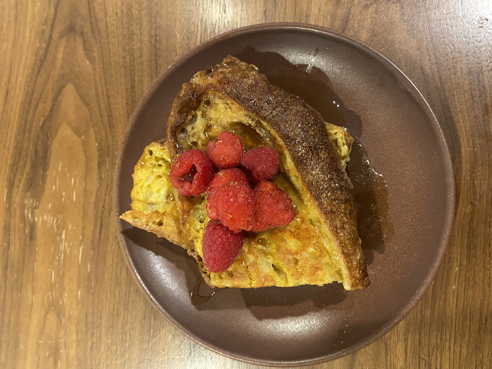

Quick & easy french toast
Introduction

This recipes is great for when you have old stale bread lying around and you don't want to wast it whiles still having a delicious and nutitious breakfast
Ingredients
- 2 peices of toast
- 2 eggs
- 1 ¼ tablespoons of butter
- ½ a teaspoon of vanilla extract
- optionaly you can add any berriews or syrup you have around to it.
- First get a bowl and crack both of your eggs into it the add the ½ teaspoon of vanilla extract and mix toroughly until the yolks and the whites are almost full combined.
- Then on medium low heat up a pan beetween 12" and 18" and prced to put roughly 1 ¼ table spoons of butter.
- Procede to dunk your 2 peices of toast into the egg mixture and place them gently in the pan.
- Cook the toast on on side util it has some brown coloring on the bottom then flip and once it is the same on the othe side of the toast place them on a plate.
- Optionaly garnish with anything you like have on french toast such as berries, syrup, etc and enjoy.